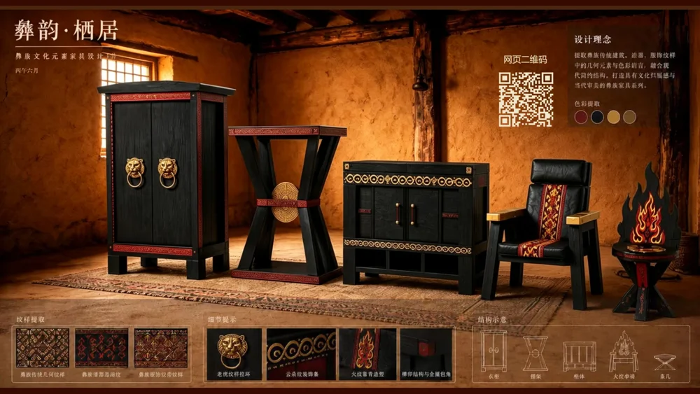
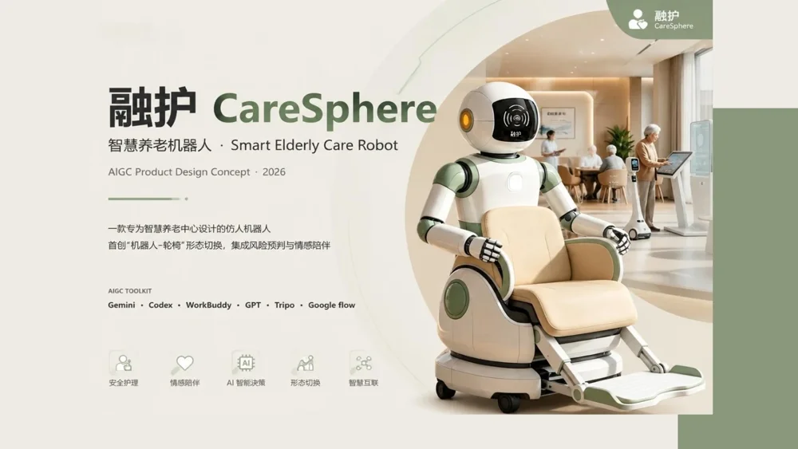
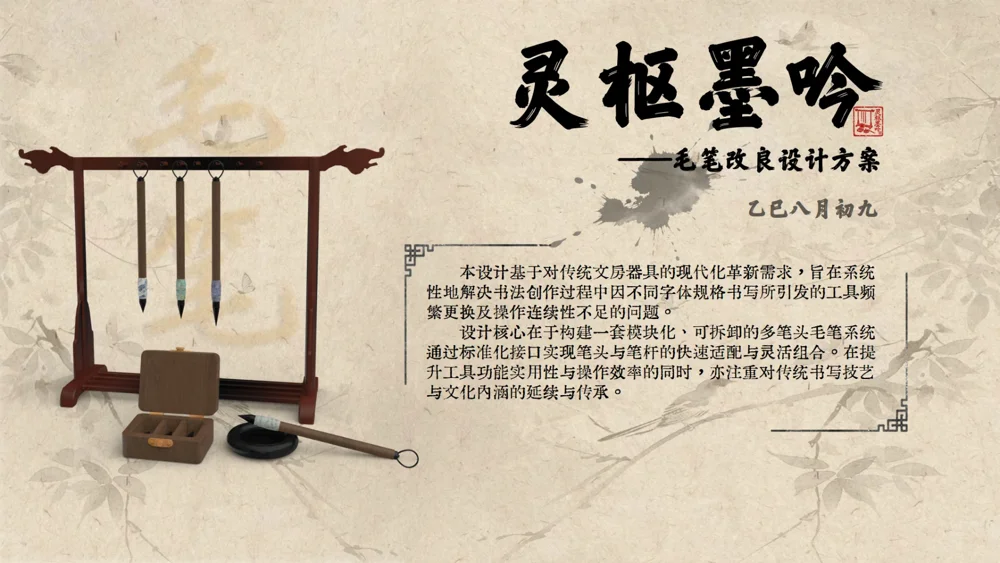
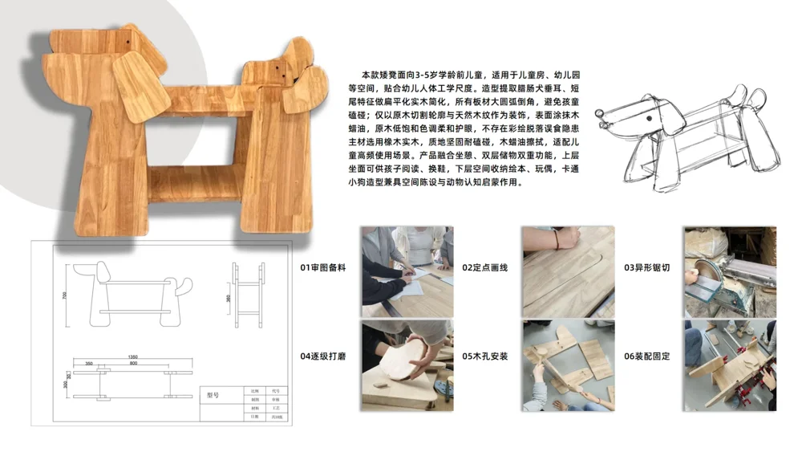
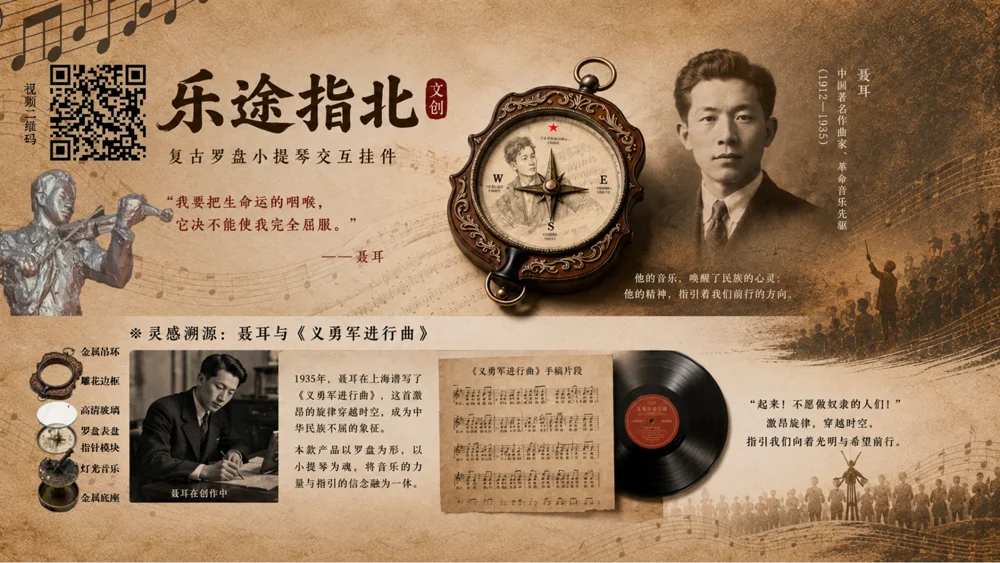
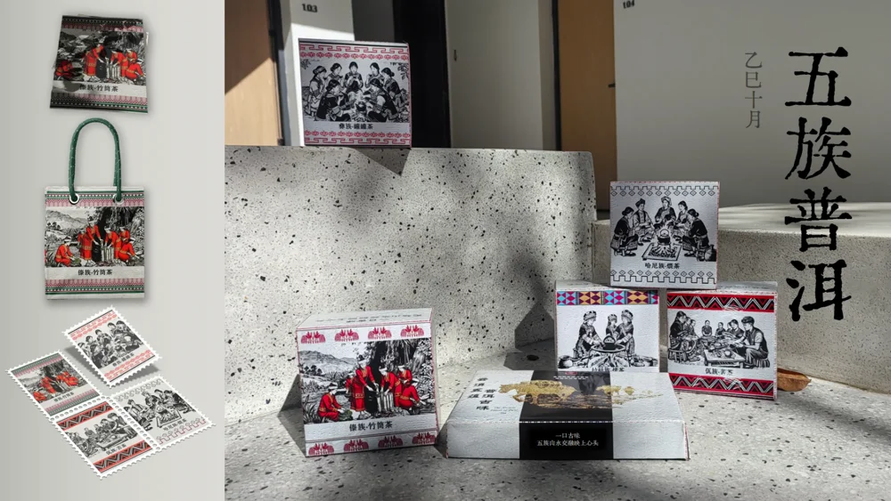
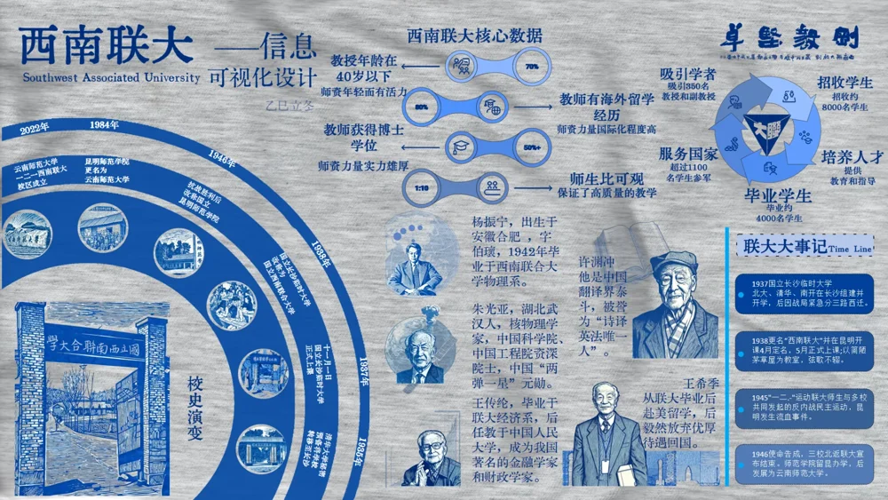
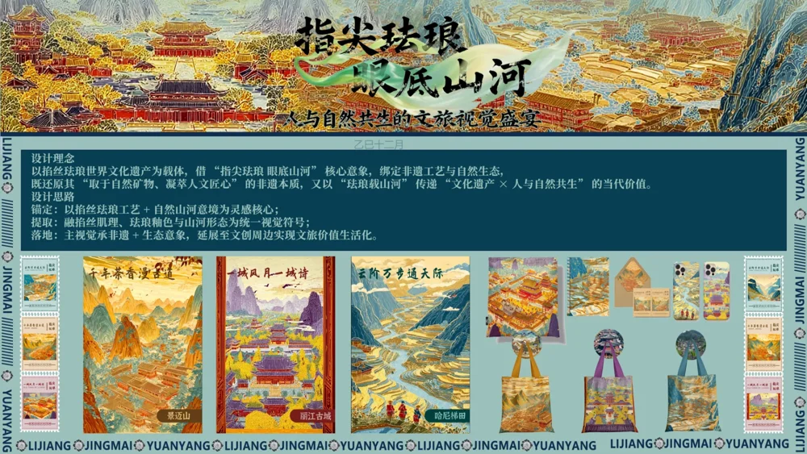
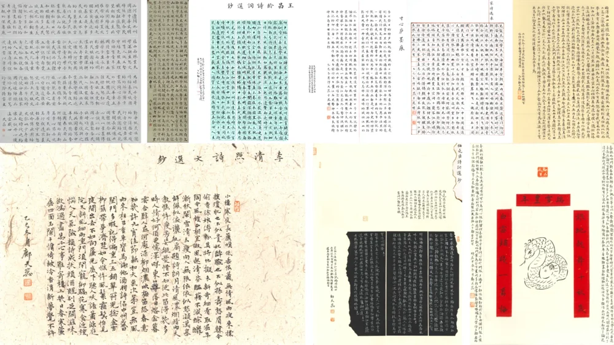

{kind=link}
{kind=link}
{kind=link}
{kind=link}
{kind=link}
{kind=link}
{kind=link}
{kind=link}
{kind=link}
{kind=link}
{kind=link}
{kind=link}
{kind=link}
{kind=link}
{kind=link}
{kind=link}
{kind=link}
{kind=link}
{kind=link}
{kind=link}
{kind=link}
{kind=link}
{kind=link}
{kind=link}
{kind=link}
基于康德美学视角的
当代彝族家具设计研究
围绕彝族传统家具的形制演进、漆色纹样与空间仪式进行资料梳理与设计分析，探讨民族传统家具在现代审美语境下的设计转译路径。独立完成选题、资料整理、分析论证及论文撰写。
《家具》期刊在投PORTFOLIO & RÉSUMÉ / 2026
产品设计 · 智能交互 · 文化转译
已获推免资格 / 2023级产品设计本科
我是西南林业大学产品设计专业本科生。
从传统器物到智能产品，探索形态、文化与使用体验之间的关系。
01 / SELECTED WORK
产品与交互、民族文化与视觉表达，以及持续的书法实践。

民族家具 / 文化转译
产品方案 · 数字展示
查看项目围绕彝族家具的形制、漆色与纹样，探索传统器物在现代生活中的设计表达，并延伸至数字展示。

智能交互 / 养老照护
AIGC 辅助概念设计 · 2026
查看项目面向智慧养老中心的机器人概念，围绕陪伴、照护与机器人—轮椅形态转换展开场景和产品设计。

文房用品 / 模块化设计
产品设计方案
查看项目针对不同字体规格书写时频繁更换工具的问题，提出可拆卸多笔头毛笔系统，并展示产品细节与配套界面。
文化转译 / 家具设计
家具系列设计
查看项目将传统戏曲角色的色彩与视觉特征转译为座椅形态，呈现系列家具方案。

儿童家具 / 木作实践
团队木作实践
查看项目以小狗为造型意象的儿童家具，作品集记录了结构设计、制作过程与实物成果。

文化体验 / 交互概念
交互产品概念
查看项目围绕音乐文化展开产品与体验设计，以指南针式的产品意象连接音乐内容与探索情境。
地域品牌 / 视觉系统
品牌视觉设计
查看项目以梯田农耕文化为视觉线索，构建红米品牌图形，并延伸至包装与文创应用。

民族文化 / 包装设计
包装与视觉设计
查看项目将民族人物、纹样与茶文化结合，探索普洱茶系列包装及相关视觉表达。

信息设计 / 文化叙事
信息可视化设计
查看项目围绕西南联大的历史与人物信息，通过图形、时间线和版面层次组织文化内容。

文化产品 / 书签设计
文创产品设计
查看项目结合地域景观与珐琅视觉语言，展开书签及文创产品的系列设计。

书法 / 艺术实践
书法作品选集
查看项目持续进行书法与传统美学实践，在字形、章法与书写节奏中积累视觉表达经验。
02 / RESEARCH
传统家具现代化与美学研究
智能产品形态与用户体验
围绕彝族传统家具的形制演进、漆色纹样与空间仪式进行资料梳理与设计分析，探讨民族传统家具在现代审美语境下的设计转译路径。独立完成选题、资料整理、分析论证及论文撰写。
《家具》期刊在投在专业导师指导下研读西方美学经典，围绕审美无利害性与功能造物之间的关系开展研究与论证。
校首届“青春闻道”大学生学术论坛优秀论文奖围绕智能产品形态与用户体验优化，开展产品概念设计、结构优化及知识产权申请。
03 / BACKGROUND
参与“见字如面”中国书法年度城市展赛组委会工作，加入昆明市盘龙区书法家协会、河南省硬笔书法家协会等专业组织。累计获国家级、省级书画书法类竞赛奖项40余项。
学校青马工程优秀学员、优秀学生干部、优秀共青团干部及“五好学生”。参与上海市爱心寒托班、Robotex世界机器人大会、BilibiliWorld等志愿服务。
西南林业选拔赛 · 视觉设计三等奖、产品设计赛道获奖
民族特色与海报设计 · 省级大展优秀奖
创新实践成果 · 省级三等奖
传统文化创新产品 · 全国入围奖
绿色材料再造与前卫穿戴设计 · 校级一等奖（最高奖）
04 / CONTACT